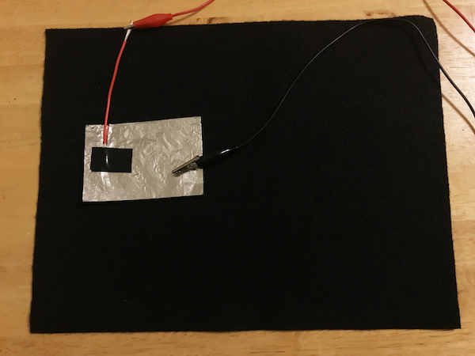
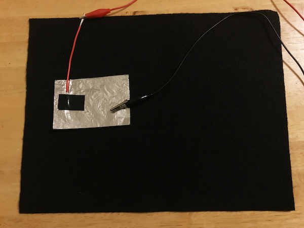

Step 6
Connect another Makey Makey wire to the holes marked "EARTH" on the Makey Makey board. Now, when you take the alligator clip from that wire and tap the aluminum foil it activates that arrow key.
Connect another Makey Makey wire to the holes marked "EARTH" on the Makey Makey board. Now, when you take the alligator clip from that wire and tap the aluminum foil it activates that arrow key.
